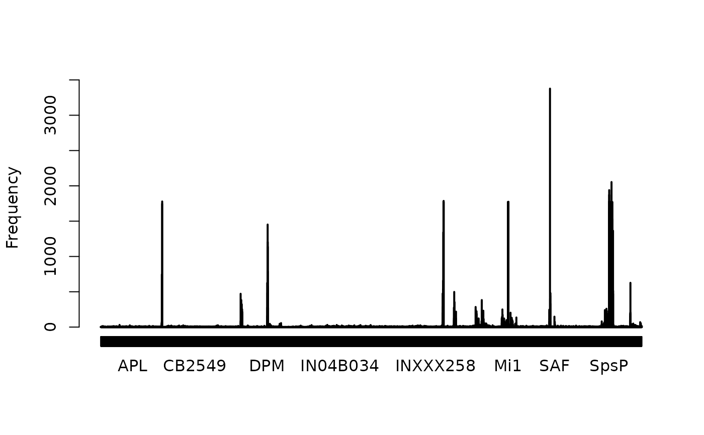

Return all DVID body annotations
Usage
mcns_dvid_annotations(
ids = NULL,
node = "neutu",
rval = c("data.frame", "list"),
columns_show = NULL,
cache = FALSE,
...
)Arguments
- ids
A set of body ids in any form understandable to
manc_ids- node
A DVID node as returned by
manc_dvid_node. The default is to return the current active (unlocked) node being used through neutu.- rval
Whether to return a fully parsed data.frame (the default) or an R list. The data.frame is easier to work with but typically includes NAs for many values that would be missing in the list.
- columns_show
Whether to show all columns, or just with '_user', or '_time' suffix. Accepted options are: 'user', 'time', 'all'.
- cache
Whether to cache the result of this call for 5 minutes.
- ...
Additional arguments passed to
pbapply::pblapply
Value
A tibble containing with columns including
bodyid as a
numericvaluestatus
user
naming_user
instance
status_user
comment
NB only one bodyid is used regardless of whether the key-value
returned has 0, 1 or 2 bodyid fields. When the ids are specified,
missing ids will have a row containing the bodyid in question and
then all other columns will be NA.
Details
See this Slack post from Stuart Berg for details.
Note that the original api call was <rootuuid>:master, but I have
now just changed this to <neutu-uuid> as returned by
manc_dvid_node. This was because the range query stopped
working 16 May 2021, probably because of a bad node.
See also
Other annotations:
mcns_body_annotations(),
mcns_neuprint_meta(),
mcns_soma_side()
Examples
# \donttest{
mda=mcns_dvid_annotations()
head(mda)
#> # A tibble: 6 × 39
#> bodyid birthtime flywire_type group hemibrain_type instance itolee_hl
#> <dbl> <chr> <chr> <int> <chr> <chr> <chr>
#> 1 10001 early DNp01 10001 Giant Fiber GF_R putative_primary
#> 2 10002 NA OCG01d 10002 OCG01 OCG01d_L NA
#> 3 10003 early VCH 10003 VCH VCH_R putative_primary
#> 4 10005 early NA 10005 AOTU019 AOTU019_R putative_primary
#> 5 10006 NA NA NA VS VS_L NA
#> 6 10009 NA CT1 10009 CT1 CT1_L NA
#> # ℹ 32 more variables: manc_bodyid <dbl>, manc_group <int>, manc_type <chr>,
#> # soma_side <chr>, status <chr>, superclass <chr>, synonyms <chr>,
#> # type <chr>, notes <chr>, user <chr>, halfbrain_body <dbl>, old_type <chr>,
#> # dimorphism <chr>, fru_dsx <chr>, soma_neuromere <chr>, truman_hl <chr>,
#> # class <chr>, mcns_serial <int>, exit_nerve <chr>, manc_serial <int>,
#> # hemibrain_bodyid <chr>, matching_notes <chr>, serial_motif <chr>,
#> # entry_nerve <chr>, root_side <chr>, flywire_id <chr>, …
plot(table(mda$type), ylab='Frequency')

kcs=mcns_dvid_annotations("/KC.*")
mbons=mcns_dvid_annotations("/MBON.+")
head(mbons)
#> # A tibble: 6 × 39
#> bodyid birthtime flywire_type group hemibrain_type instance itolee_hl
#> <dbl> <chr> <chr> <int> <chr> <chr> <chr>
#> 1 520151 early NA 10013 MBON01 MBON01(y5B'2a)_L putative…
#> 2 10013 early NA 10013 MBON01 MBON01(y5B'2a)_R putative…
#> 3 522444 early NA 522444 MBON02 MBON02(B2B'2a)_L putative…
#> 4 522749 early NA 522444 MBON02 MBON02(B2B'2a)_R putative…
#> 5 519373 early NA 519373 MBON03 MBON03(B'2mp)_L putative…
#> 6 521526 early NA 519373 MBON03 MBON03(B'2mp)_R putative…
#> # ℹ 32 more variables: manc_bodyid <dbl>, manc_group <int>, manc_type <chr>,
#> # soma_side <chr>, status <chr>, superclass <chr>, synonyms <chr>,
#> # type <chr>, notes <chr>, user <chr>, halfbrain_body <dbl>, old_type <chr>,
#> # dimorphism <chr>, fru_dsx <chr>, soma_neuromere <chr>, truman_hl <chr>,
#> # class <chr>, mcns_serial <int>, exit_nerve <chr>, manc_serial <int>,
#> # hemibrain_bodyid <chr>, matching_notes <chr>, serial_motif <chr>,
#> # entry_nerve <chr>, root_side <chr>, flywire_id <chr>, …
# }